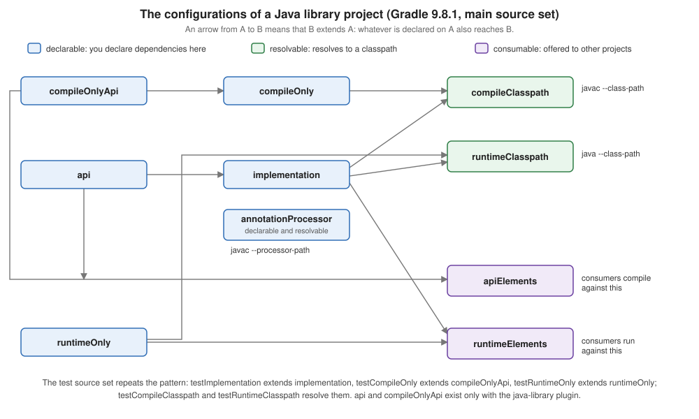

Declaring Dependencies & Configurations
|
This content was generated with the assistance of AI and should be verified against the official documentation before being relied on in production. |
This page is written against Gradle 9.8.1 (the current release on 2026-10-16). Every example was run on JDK 26 through the Gradle wrapper on 2026-10-16, on macOS, with the configuration cache
enabled (org.gradle.configuration-cache=true in gradle.properties) and compiles the Java code with options.release = 21. Every example is compatible with the configuration cache
unless the text says otherwise; the examples that fail on purpose were run in a scratch copy of the build and are labelled as failures. The Kotlin DSL is shown first and the Groovy DSL second wherever the
syntax differs, and both versions were run, with the same output unless the text says that it differs. Paths of the scratch workspace are shortened to <work>; lines that were left out of an output are marked with ..., and the
A web-based, searchable dependency report is available by adding the --scan option. hint that closes every dependencies report is left out. Gradle 8.14 was not available here: what differs in it is described from the official
documentation in the section "Gradle 8.14 and Gradle 9" and is labelled "not run here".
A dependency is a statement that the code of this project needs the code of another module, project or file. What makes Gradle’s model different from Ant’s and Maven’s is the second half of the statement: where it is needed. Every dependency is declared on a named bucket, a configuration, and the build then asks Gradle to turn certain configurations into classpaths. Many of the problems that dependencies cause in a Gradle build are a dependency declared on the wrong bucket, or a bucket used for something it was not made for, so this page is about the buckets as much as about the dependencies. Repositories are on Repositories & Content Filtering, versions and the catalog on Version Catalogs, version constraints, rich versions and platforms on Platforms, Constraints & Rich Versions, what happens when two paths ask for different versions on Dependency Resolution, Conflicts & Capabilities, and the attributes by which a variant of a module is chosen on Variant-Aware Resolution & Module Metadata. The vocabulary that is common to the three tools (coordinates, the graph, scopes) is on Dependency Management Fundamentals; this page is the Gradle half of its section on scopes and configurations.
The running example
The example of the section is tidepool, a small tide prediction toolkit: a model library (tidepool-model), an engine library on top of it (tidepool-engine) and a command line application (tidepool-cli). Its layout, its settings file and how the
projects find each other are on Multi Project Builds; the settings file declares Maven Central once, for every project, with
repositoriesMode = RepositoriesMode.FAIL_ON_PROJECT_REPOS, so no build script below has a repositories block. The libraries live in the version catalog, which the Groovy and the Kotlin build share:
[versions]
commons-csv = "1.14.1"
picocli = "4.7.7"
annotations = "26.1.0"
auto-service = "1.1.1"
slf4j = "2.0.17"
junit = "6.1.3"
[libraries]
commons-csv = { module = "org.apache.commons:commons-csv", version.ref = "commons-csv" }
picocli = { module = "info.picocli:picocli", version.ref = "picocli" }
jetbrains-annotations = { module = "org.jetbrains:annotations", version.ref = "annotations" }
auto-service = { module = "com.google.auto.service:auto-service", version.ref = "auto-service" }
auto-service-annotations = { module = "com.google.auto.service:auto-service-annotations", version.ref = "auto-service" }
slf4j-simple = { module = "org.slf4j:slf4j-simple", version.ref = "slf4j" }
junit-jupiter = { module = "org.junit.jupiter:junit-jupiter", version.ref = "junit" }
junit-platform-launcher = { module = "org.junit.platform:junit-platform-launcher", version.ref = "junit" }org.gradle.configuration-cache=true
group=io.tidepool
version=1.0.0
org.gradle.jvmargs=-Xmx1g -XX:MaxMetaspaceSize=512mThe org.gradle.jvmargs line only gives the daemon more room than the 512 MiB heap and 384 MiB metaspace it starts with when nothing is set; the wrapper properties (the checksum and the URL
https://services.gradle.org/distributions/gradle-9.8.1-bin.zip) are on Gradle Wrapper.
These files are this page’s own setup for the examples, not an example taken from the manual.
Configurations and their three roles
A configuration is a named collection of dependencies, and also of the artifacts a project offers and of the rules by which they are selected. The same word covers three quite different jobs, and since Gradle 8.4 the user manual calls them roles:
| Role (flag) | Also called | What it is for | Example in the Java plugins |
|---|---|---|---|
Declarable ( |
dependency scope, bucket |
Collects the dependencies, dependency constraints and exclude rules that are written in the |
|
Resolvable ( |
consumer, classpath |
The root of a dependency graph. Asking it for its files makes Gradle resolve what the declarable configurations it extends collected into a set of files. Dependencies are not declared on it directly. |
|
Consumable ( |
producer, outgoing variant |
What this project offers to the projects that depend on it: artifacts plus attributes that describe them. It is selected by another project’s resolution; it is not resolved here. |
|
The three roles exist so that a build can say what it means. A dependency declared on implementation is a statement about this project; compileClasspath is the answer to "what does javac see?"; apiElements is the answer to "what does the project that depends on me
see?". The three questions have different answers, and keeping the three jobs apart is how api can differ from implementation. Before the roles were made explicit, one configuration object could be all three, and the flags canBeResolved, canBeConsumed and canBeDeclared were the only way to tell
(all three default to true, which the user manual labels "legacy, don’t use"). The role factory methods dependencyScope, resolvable and consumable arrived in Gradle 8.4 and create configurations whose role cannot be changed afterwards; in Gradle 9.8.1 they are
still marked incubating in the Javadoc, and they are the way to create your own (see Your own configurations). Methods called on a configuration in a role they do not suit, such as resolving a declarable one, were a deprecation in the 8.x line and are an error since Gradle 9.0 (both are shown below).
In the tools that came before Gradle the same idea has other names. A Maven scope is an attribute of each dependency (compile, provided, runtime, test) that decides which classpaths the dependency joins and how it is inherited, and it is the thing that is published to consumers; see
Maven Dependencies, Scopes & Mediation. An Ivy configuration is a named view of a module, and a dependency maps one configuration of mine to one of the dependency’s
(conf="compile->default"); a Gradle configuration is closest to that, and Ivy’s extends is Gradle’s extendsFrom; see
Ivy: Module Descriptors & Configurations. The section The same in Maven and in Ant lines the three up.
The three kinds of dependencies
Gradle distinguishes module dependencies (a published module found in a repository), project dependencies (another project of the same build) and file dependencies (files with no metadata). All three are written inside dependencies { }, as a
configuration name followed by the notation: implementation("org.apache.commons:commons-csv:1.14.1"). In the Kotlin DSL implementation(...) is a generated accessor for the configuration that the Java plugin created; a configuration that your own script creates has none, and is written
with a string ("tideTools"("...")) or through add. In the Groovy DSL the configuration name is a dynamic method.
Module dependencies
The notation of a module dependency is the string group:name:version, which are the same three coordinates as in a Maven POM (Gradle calls the artifactId the name). The optional parts follow it: group:name:version:classifier@extension. The forms below
were run in a single-project build named notation.
plugins {
`java-library`
}
dependencies {
// A module dependency: group:name:version, with a reason and an exclusion
implementation("org.apache.commons:commons-csv:1.14.1") {
because("reads the stations file")
exclude(group = "commons-codec", module = "commons-codec")
}
// Do not follow the transitive dependencies of this module
runtimeOnly("org.slf4j:slf4j-simple:2.0.17") {
isTransitive = false
}
// A classifier selects another artifact of the same module
runtimeOnly("info.picocli:picocli:4.7.7:sources")
// An artifact-only notation (@jar) ignores the module metadata: no transitive dependencies
runtimeOnly("com.google.guava:guava:33.5.0-jre@jar")
// File dependencies: files without any metadata
implementation(files("libs/legacy.jar"))
implementation(fileTree("tools") { include("*.jar") })
}
tasks.register("printClasspaths") {
val classpaths: Map<String, FileCollection> = mapOf(
"compileClasspath" to configurations.compileClasspath.get(),
"runtimeClasspath" to configurations.runtimeClasspath.get(),
)
doLast {
classpaths.forEach { (name, files) ->
println("$name:")
files.map { it.name }.sorted().forEach { println(" $it") }
}
}
}plugins {
id 'java-library'
}
dependencies {
// A module dependency: group:name:version, with a reason and an exclusion
implementation('org.apache.commons:commons-csv:1.14.1') {
because 'reads the stations file'
exclude group: 'commons-codec', module: 'commons-codec'
}
// Do not follow the transitive dependencies of this module
runtimeOnly('org.slf4j:slf4j-simple:2.0.17') {
transitive = false
}
// A classifier selects another artifact of the same module
runtimeOnly 'info.picocli:picocli:4.7.7:sources'
// An artifact-only notation (@jar) ignores the module metadata: no transitive dependencies
runtimeOnly 'com.google.guava:guava:33.5.0-jre@jar'
// File dependencies: files without any metadata
implementation files('libs/legacy.jar')
implementation fileTree('tools') { include '*.jar' }
}
tasks.register('printClasspaths') {
Map<String, FileCollection> classpaths = [
compileClasspath: configurations.compileClasspath,
runtimeClasspath: configurations.runtimeClasspath,
]
doLast {
classpaths.each { name, files ->
println "${name}:"
files.collect { it.name }.sort().each { println " ${it}" }
}
}
}The printClasspaths task resolves the compile and the runtime classpath at execution time and prints the file names. It captures the two configurations as FileCollection values when the task is configured, and reads them only in the action: that is what makes it compatible with the
configuration cache (the section Your own configurations shows what fails when the build script is touched in the action). The output is the same in both DSLs:
compileClasspath:
commons-csv-1.14.1.jar
commons-io-2.20.0.jar
extra.jar
legacy.jar
runtimeClasspath:
commons-csv-1.14.1.jar
commons-io-2.20.0.jar
extra.jar
guava-33.5.0-jre.jar
legacy.jar
picocli-4.7.7-sources.jar
slf4j-simple-2.0.17.jarWhat each of the lines of the build did can be read from these two outputs:
-
String notation, with
becauseandexclude.commons-csvbringscommons-iobut notcommons-codec, which theexclude(group = ..., module = ...)(Groovy:exclude group: ..., module: ...) removed from this dependency’s subtree; the because text is a documentation of intent that thedependencyInsightreport prints (see Viewing and debugging dependencies). An exclusion applies to this declaration and to everything below it; excluding a module everywhere is a rule of the configuration, which is on Resolution Rules & Substitution. -
isTransitive = false(Groovy:transitive = false) takes the module without any of its dependencies.slf4j-simplealone is in the runtime classpath, withoutslf4j-apithat it would normally bring. -
A classifier selects another artifact of the same module.
info.picocli:picocli:4.7.7:sourcesresolves the filepicocli-4.7.7-sources.jar, and the dependency report cannot tell it from a plain one: it only listsinfo.picocli:picocli:4.7.7. -
@jar, the artifact-only notation, tells Gradle to take that artifact of the module and ignore the module’s metadata, so none of its transitive dependencies come with it. Guava is the clear case. Declared plainly it brings five more modules, as this report (run in a scratch build) shows:runtimeClasspath - Runtime classpath of source set 'main'. \--- com.google.guava:guava:33.5.0-jre +--- com.google.guava:failureaccess:1.0.3 +--- com.google.guava:listenablefuture:9999.0-empty-to-avoid-conflict-with-guava +--- org.jspecify:jspecify:1.0.0 +--- com.google.errorprone:error_prone_annotations:2.41.0 \--- com.google.j2objc:j2objc-annotations:3.1With
@jaronlyguava-33.5.0-jre.jaris in the classpath, which is what the runtime classpath above shows. The artifact-only notation is occasionally what you want and often what causes aNoClassDefFoundErrorlater; preferisTransitive = falsefor the same effect with a name that says what it does.
The dependencies report of the runtime classpath is the other view of the same build:
runtimeClasspath - Runtime classpath of source set 'main'.
+--- org.apache.commons:commons-csv:1.14.1
| \--- commons-io:commons-io:2.20.0
+--- org.slf4j:slf4j-simple:2.0.17
+--- info.picocli:picocli:4.7.7
\--- com.google.guava:guava:33.5.0-jreThe tree shows commons-io below commons-csv and no commons-codec, and neither the sources classifier nor the @jar suffix. The Groovy DSL printed the same.
The multi-string notation is deprecated
Older builds write the three coordinates as named arguments: implementation(group = "org.apache.commons", name = "commons-csv", version = "1.14.1") in the Kotlin DSL and
implementation group: 'org.apache.commons', name: 'commons-csv', version: '1.14.1' in the Groovy DSL. That multi-string notation (the user manual also calls it the map notation) was deprecated in Gradle 9.1 and fails with an error in Gradle 10. The build still works in
Gradle 9.8.1, and warns, in both DSLs (run with --warning-mode all and without the configuration cache, since a cache hit does not repeat configuration-time warnings):
> Configure project :
Declaring dependencies using multi-string notation has been deprecated. This will fail with an error in Gradle 10. Please use single-string notation ("org.apache.commons:commons-csv:1.14.1") or DependencyFactory instead. Consult the upgrading guide for further information: https://docs.gradle.org/9.8.1/userguide/upgrading_version_9.html#dependency_multi_string_notation
at Build_gradle._init_$lambda$0(build.gradle.kts:6)
(Run with --stacktrace to get the full stack trace of this deprecation warning.)
> Task :dependencies
------------------------------------------------------------
Root project 'notation'
------------------------------------------------------------> Configure project :
Build file '<work>/build.gradle': line 6
Declaring dependencies using multi-string notation has been deprecated. This will fail with an error in Gradle 10. Please use single-string notation ("org.apache.commons:commons-csv:1.14.1") or DependencyFactory instead. Consult the upgrading guide for further information: https://docs.gradle.org/9.8.1/userguide/upgrading_version_9.html#dependency_multi_string_notation
at build_523e0ft5mz87vjihc7bhxcrt7$_run_closure1.doCall$original(<work>/build.gradle:6)
(Run with --stacktrace to get the full stack trace of this deprecation warning.)
> Task :dependencies
------------------------------------------------------------
Root project 'notation'
------------------------------------------------------------The replacement is the single string "org.apache.commons:commons-csv:1.14.1" (a classifier or extension goes into the string, targetConfiguration into the configuration block); the upgrade guide lists the translations.
Project dependencies
A dependency on another project of the same build names the project by its path: implementation(project(":tidepool-engine")) (Groovy: implementation project(':tidepool-engine')). The dependent project is built from the sources in the build and not downloaded; the
task graph, the classpaths it produces, the type-safe accessors (projects.tidepoolEngine, which are enabled with the TYPESAFE_PROJECT_ACCESSORS feature preview) and the deprecation in Gradle 9.6 of passing a Project object as the notation are all on
Multi Project Builds and are not repeated here. What matters on this page is that a project dependency is also declared on a configuration (api or implementation below) and that this
choice is what the next sections are about. The dependencies report writes a project dependency declared on a declarable configuration as project tidepool-model, and a resolved one as project ':tidepool-model'.
Gradle 9.3 also deprecated a related habit. Declaring com.example:my-project:1.0.0 in the project whose own group, name and version are exactly those used to resolve to that project itself; in Gradle 10 it will be looked up in the repositories instead.
Use project(...) for the project dependency.
File dependencies
A file dependency is a set of files added to a configuration with files(...) or fileTree(...). It has no coordinates, so it has no transitive dependencies, no version, nothing to resolve and nothing to publish: the user manual recommends declaring the files in a local
repository on a file:// URL instead, and says outright that file dependencies are discouraged. They are what remains when a jar is not available from any repository, such as a vendor library checked into the repository. The notation build above has one of each, with
libs/legacy.jar and tools/extra.jar, which were made with the jar tool for the occasion (their content is irrelevant). Both reached the compile and the runtime classpath (legacy.jar and extra.jar in the output above), because they were declared on implementation. In the dependencies report of
the declarable configuration they look like this:
implementation - Implementation dependencies for the 'main' feature. (n)
+--- org.apache.commons:commons-csv:1.14.1 (n)
+--- unspecified (n)
\--- unspecified (n)Two things are visible. The (n) marks a declarable configuration, whose tree cannot be resolved (see the annotations in Viewing and debugging dependencies), and the file dependencies are named unspecified, because they have no coordinates; they do not appear in the tree of the
resolved runtimeClasspath above at all, even though their files are in the classpath. The report is therefore not the complete picture of a classpath that has file dependencies, and a build that has them needs to look at the files.
Two more facts from the user manual. A fileTree has no stable order, even on one machine, which changes the cache key of any task that takes the classpath as an input; files(...) with explicit names is stable. And when the files are produced by a task, the dependency must say
so with builtBy, or a project that depends transitively on this one may not run the task first:
dependencies {
implementation(files(layout.buildDirectory.dir("classes")) {
builtBy("compile")
})
}dependencies {
implementation files(layout.buildDirectory.dir('classes')) {
builtBy 'compile'
}
}This snippet is taken from the user manual and was not run here. gradleApi() and localGroovy() are file dependencies too, for the build’s own plugin code (see
Binary Plugins).
Source: Gradle: File dependencies
Where the version comes from
The examples above spell the version out in the string. In a real build it comes from the version catalog (implementation(libs.commons.csv), as in the tidepool build files below), which
Version Catalogs explains, and the version can be a range, a prefix, a strict constraint or an imported bill of materials, which
Platforms, Constraints & Rich Versions explains. A catalog entry can take a configuration block exactly as a string can: implementation(libs.commons.csv) { because("reads the stations file") } is in
the engine build below.
The configurations of the Java plugins
The java plugin creates the configurations for the main source set and for the test source set, and java-library adds api and compileOnlyApi to the main one. The application plugin applies java. All of them were
printed from the build that ran on this page, by a task that lists every configuration of tidepool-engine (a java-library project) with its roles and what it extends:
tasks.register("printConfigurations") {
val rows: Provider<List<String>> = provider {
configurations.sortedBy { it.name }.map { c ->
val roles = listOfNotNull(
"declarable".takeIf { c.isCanBeDeclared },
"resolvable".takeIf { c.isCanBeResolved },
"consumable".takeIf { c.isCanBeConsumed },
).joinToString("+")
"${c.name} [$roles] extends ${c.extendsFrom.map { it.name }.sorted()}"
}
}
inputs.property("rows", rows)
doLast {
rows.get().forEach { println(it) }
}
}tasks.register('printConfigurations') {
Provider<List<String>> rows = provider {
configurations.sort { it.name }.collect { c ->
def roles = []
if (c.canBeDeclared) roles << 'declarable'
if (c.canBeResolved) roles << 'resolvable'
if (c.canBeConsumed) roles << 'consumable'
"${c.name} [${roles.join('+')}] extends ${c.extendsFrom*.name.sort()}".toString()
}
}
inputs.property('rows', rows)
doLast {
rows.get().each { println it }
}
}The rows are computed in a provider and stored as a task input, so that the action does not touch the project. The output, the same for both DSLs:
annotationProcessor [declarable+resolvable] extends []
api [declarable] extends []
apiElements [consumable] extends [api, compileOnlyApi]
archives [consumable] extends []
compileClasspath [resolvable] extends [compileOnly, implementation]
compileOnly [declarable] extends [compileOnlyApi]
compileOnlyApi [declarable] extends []
default [consumable] extends [runtimeElements]
implementation [declarable] extends [api]
mainSourceElements [consumable] extends [implementation]
runtimeClasspath [resolvable] extends [implementation, runtimeOnly]
runtimeElements [consumable] extends [implementation, runtimeOnly]
runtimeOnly [declarable] extends []
testAnnotationProcessor [declarable+resolvable] extends []
testCompileClasspath [resolvable] extends [testCompileOnly, testImplementation]
testCompileOnly [declarable] extends [compileOnlyApi]
testImplementation [declarable] extends [implementation]
testResultsElementsForTest [consumable] extends []
testRuntimeClasspath [resolvable] extends [testImplementation, testRuntimeOnly]
testRuntimeOnly [declarable] extends [runtimeOnly]Read together with the user manual’s tables, this is the complete picture:
| Configuration | Role | Dependencies declared here are on… | Maven scope in a published POM |
|---|---|---|---|
|
declarable |
the compile classpath of this project and of its consumers; the runtime classpath of both |
|
|
declarable |
the compile and runtime classpath of this project; the runtime classpath of its consumers, not their compile classpath |
|
|
declarable |
only the compile classpath of this project (not the test classpath, not the runtime, not published) |
none |
|
declarable |
the compile classpath of this project and of its consumers, and nothing at runtime |
|
|
declarable |
only the runtime classpath of this project and of its consumers |
|
|
declarable and resolvable |
the annotation processor path of the compiler |
none |
|
declarable |
the compile and runtime classpath of the tests, the compile classpath of the tests, the runtime classpath of the tests; |
none (tests are not published) |
|
resolvable |
Nothing is declared on them: they are the classpaths that |
none |
|
consumable |
Nothing is declared on them: they are what a project that depends on this one selects (the |
the |
The diagram draws the main half of it as a graph. An arrow from A to B means that B extendsFrom A, which is why a dependency declared on api ends up in implementation, in compileClasspath, in runtimeClasspath and in both outgoing variants.

A few things in the output are worth reading closely:
-
implementationextendsapi, so what is exposed to consumers is also available to this project, which is why one declaration onapiis enough.compileOnlyextendscompileOnlyApifor the same reason. -
compileClasspathextendscompileOnlyandimplementation;runtimeClasspathextendsimplementationandruntimeOnly. There is no line fromcompileOnlyto the runtime and none fromruntimeOnlyto compilation; that is allcompileOnlyandruntimeOnlymean. -
apiElementsextendsapiandcompileOnlyApi;runtimeElementsextendsimplementationandruntimeOnly. A consumer compiles against the first and runs against the second. -
annotationProcessoris both declarable and resolvable, an exception that the user manual’s table does not show (it lists it as declarable only): the resolvable configurations report lists it, anddependencies --configuration annotationProcessorresolves it. It is resolved to the processor path of the compiler (see annotationProcessor and runtimeOnly). -
archivesanddefaultare legacy consumable configurations that are kept for backward compatibility (defaultextendsruntimeElements, as the output shows, and is described as "Configuration for default artifacts"; thearchivesconfiguration was deprecated in Gradle 9.1 and will be removed in Gradle 10).mainSourceElementsandtestResultsElementsForTestare consumable configurations for tools, described byoutgoingVariantsas the list of the source directories of the main source set and the binary results of thetestsuite; no dependencies are declared on them. -
The test configurations repeat the pattern:
testImplementation extends implementation,testRuntimeOnly extends runtimeOnly, andtestCompileOnly extends compileOnlyApi(so test code sees the annotations that the main code sees, but not what the main code declaredcompileOnly).
What the plugins add is a matter of what is applied, not of the Gradle version. The java plugin has implementation (since Gradle 3.4), compileOnly, runtimeOnly and the test ones, and no api, which is why a library that must tell its consumers what is exposed applies java-library. The War plugin adds
providedCompile and providedRuntime, which differ from compileOnly in that the dependencies are on the runtime classpath of the project and the tests but are left out of the WAR. Other plugins create their own: the Android Gradle plugin per build type and flavor (debugImplementation),
Kotlin Multiplatform per source set (commonMainImplementation); see Project Structure, Gradle and Build Variants and
Dependencies and the Library Ecosystem. The java-test-fixtures plugin (Gradle 5.6) adds testFixturesApi and testFixturesImplementation, and the JVM Test Suite plugin a set per suite (intTestImplementation and intTestRuntimeOnly for a suite called intTest); see Testing JVM Projects.
The history of these names is short enough to list:
| Gradle | Change |
|---|---|
2.12 |
|
3.4 |
The |
4.6 |
The |
5.6 |
The |
6.7 |
|
7.0 |
|
8.4 |
|
9.0 |
Using a configuration in a way its role does not allow is an error. |
Source: Gradle: Understanding dependency configurations, Gradle: Java Library plugin, dependency configurations, Gradle: Configuration inheritance, Gradle 2.12 release notes, Gradle 3.4 release notes, Gradle 4.6 release notes, Gradle 6.7 release notes, Gradle: Removal of compile and runtime configurations
api versus implementation
For a library, the most important decision about a dependency is whether the types of that dependency appear in the library’s own interface. If they do, the dependency is part of the API: the consumers need it to compile against the library, so it goes on api and travels to their
compile classpath. If it is only used inside, it goes on implementation, and the consumers get it at run time but not to compile against. The user manual’s rule of thumb is to prefer implementation whenever possible, and to reach for api when a type of the dependency is in the library’s binary
interface:
-
types used in a super class or an interface of a public class;
-
types in the parameters (including the generic parameters) of a public or protected method;
-
types of public fields;
-
public annotations.
A type used only in method bodies, in private members or in internal classes is not part of the API. The compiler cannot tell the difference; Gradle can only be told. Choosing implementation is also the safer error: if an internal type leaks, the consumers fail to compile at once
and you notice. Choosing api by habit makes every consumer’s compile classpath larger and every change of the dependency a reason to recompile them, and it lets consumers write code against a library they never declared, which breaks when the library stops exposing it. (The
user manual lists faster compilation and less recompilation as the benefits; that is not measured here.)
The three builds
The model library has no dependencies of its own to compile, only the annotations (see below). The engine library exposes the model in its API, because a method of TideEngine takes a Station and returns a Height, and uses Commons CSV only inside StationReader. The
command line application is a consumer. These are the three build scripts as they ran, with the printClasspaths and printConfigurations tasks that the tables on this page come from:
plugins {
`java-library`
}
dependencies {
compileOnlyApi(libs.jetbrains.annotations)
testImplementation(libs.junit.jupiter)
testRuntimeOnly(libs.junit.platform.launcher)
}
tasks.withType<JavaCompile>().configureEach {
options.release = 21
}
tasks.test {
useJUnitPlatform()
}plugins {
`java-library`
}
dependencies {
api(project(":tidepool-model"))
implementation(libs.commons.csv) {
because("reads the stations file")
}
compileOnly(libs.auto.service.annotations)
annotationProcessor(libs.auto.service)
testImplementation(libs.junit.jupiter)
testRuntimeOnly(libs.junit.platform.launcher)
}
tasks.withType<JavaCompile>().configureEach {
options.release = 21
}
tasks.test {
useJUnitPlatform()
}
tasks.register("printClasspaths") {
val classpaths: Map<String, FileCollection> = mapOf(
"annotationProcessor" to configurations.annotationProcessor.get(),
"compileClasspath" to configurations.compileClasspath.get(),
"runtimeClasspath" to configurations.runtimeClasspath.get(),
)
val root = rootDir
doLast {
classpaths.forEach { (name, files) ->
println("$name:")
files.map { if (it.startsWith(root)) it.relativeTo(root).path else it.name }.sorted().forEach { println(" $it") }
}
}
}
tasks.register("printConfigurations") {
val rows: Provider<List<String>> = provider {
configurations.sortedBy { it.name }.map { c ->
val roles = listOfNotNull(
"declarable".takeIf { c.isCanBeDeclared },
"resolvable".takeIf { c.isCanBeResolved },
"consumable".takeIf { c.isCanBeConsumed },
).joinToString("+")
"${c.name} [$roles] extends ${c.extendsFrom.map { it.name }.sorted()}"
}
}
inputs.property("rows", rows)
doLast {
rows.get().forEach { println(it) }
}
}plugins {
application
}
dependencies {
implementation(project(":tidepool-engine"))
implementation(libs.picocli)
runtimeOnly(libs.slf4j.simple)
}
application {
mainClass = "io.tidepool.cli.Main"
}
tasks.withType<JavaCompile>().configureEach {
options.release = 21
}
tasks.register("printClasspaths") {
val classpaths: Map<String, FileCollection> = mapOf(
"annotationProcessor" to configurations.annotationProcessor.get(),
"compileClasspath" to configurations.compileClasspath.get(),
"runtimeClasspath" to configurations.runtimeClasspath.get(),
)
val root = rootDir
doLast {
classpaths.forEach { (name, files) ->
println("$name:")
files.map { if (it.startsWith(root)) it.relativeTo(root).path else it.name }.sorted().forEach { println(" $it") }
}
}
}plugins {
id 'java-library'
}
dependencies {
compileOnlyApi libs.jetbrains.annotations
testImplementation libs.junit.jupiter
testRuntimeOnly libs.junit.platform.launcher
}
tasks.withType(JavaCompile).configureEach {
options.release = 21
}
tasks.named('test') {
useJUnitPlatform()
}plugins {
id 'java-library'
}
dependencies {
api project(':tidepool-model')
implementation(libs.commons.csv) {
because 'reads the stations file'
}
compileOnly libs.auto.service.annotations
annotationProcessor libs.auto.service
testImplementation libs.junit.jupiter
testRuntimeOnly libs.junit.platform.launcher
}
tasks.withType(JavaCompile).configureEach {
options.release = 21
}
tasks.named('test') {
useJUnitPlatform()
}
tasks.register('printClasspaths') {
Map<String, FileCollection> classpaths = [
annotationProcessor: configurations.annotationProcessor,
compileClasspath : configurations.compileClasspath,
runtimeClasspath : configurations.runtimeClasspath,
]
File root = rootDir
doLast {
classpaths.each { name, files ->
println "${name}:"
files.collect { it.toPath().startsWith(root.toPath()) ? root.toPath().relativize(it.toPath()).toString() : it.name }.sort().each { println " ${it}" }
}
}
}
tasks.register('printConfigurations') {
Provider<List<String>> rows = provider {
configurations.sort { it.name }.collect { c ->
def roles = []
if (c.canBeDeclared) roles << 'declarable'
if (c.canBeResolved) roles << 'resolvable'
if (c.canBeConsumed) roles << 'consumable'
"${c.name} [${roles.join('+')}] extends ${c.extendsFrom*.name.sort()}".toString()
}
}
inputs.property('rows', rows)
doLast {
rows.get().each { println it }
}
}plugins {
id 'application'
}
dependencies {
implementation project(':tidepool-engine')
implementation libs.picocli
runtimeOnly libs.slf4j.simple
}
application {
mainClass = 'io.tidepool.cli.Main'
}
tasks.withType(JavaCompile).configureEach {
options.release = 21
}
tasks.register('printClasspaths') {
Map<String, FileCollection> classpaths = [
annotationProcessor: configurations.annotationProcessor,
compileClasspath : configurations.compileClasspath,
runtimeClasspath : configurations.runtimeClasspath,
]
File root = rootDir
doLast {
classpaths.each { name, files ->
println "${name}:"
files.collect { it.toPath().startsWith(root.toPath()) ? root.toPath().relativize(it.toPath()).toString() : it.name }.sort().each { println " ${it}" }
}
}
}./gradlew --configuration-cache clean build ran both builds, with the same result (seventeen tasks, the tests of the model and the engine included); the second run was a cache hit:
BUILD SUCCESSFUL in 1s
17 actionable tasks: 17 executed
Configuration cache entry stored.Reusing configuration cache.
BUILD SUCCESSFUL in 370ms
13 actionable tasks: 13 up-to-date
Configuration cache entry reused.The tree of declarable configurations of the engine shows exactly what was written, and nothing else (the project dependency is project tidepool-model because the configuration has not been resolved):
api - API dependencies for the 'main' feature. (n)
\--- project tidepool-model (n)implementation - Implementation dependencies for the 'main' feature. (n)
\--- org.apache.commons:commons-csv:1.14.1 (n)These files are this page’s own setup for the examples, not an example taken from the manual.
What the consumer sees
The command line application is the consumer. Its compile classpath contains the engine, because it declared it, and the model, because the engine put it on api; it does not contain Commons CSV, which the engine put on implementation. Its runtime classpath contains
all of them, plus slf4j-simple that the application declared on runtimeOnly:
compileClasspath - Compile classpath for source set 'main'.
+--- project ':tidepool-engine'
| \--- project ':tidepool-model'
| \--- org.jetbrains:annotations:26.1.0
\--- info.picocli:picocli:4.7.7runtimeClasspath - Runtime classpath of source set 'main'.
+--- project ':tidepool-engine'
| +--- project ':tidepool-model'
| \--- org.apache.commons:commons-csv:1.14.1
| +--- commons-io:commons-io:2.20.0
| \--- commons-codec:commons-codec:1.19.0
+--- info.picocli:picocli:4.7.7
\--- org.slf4j:slf4j-simple:2.0.17
\--- org.slf4j:slf4j-api:2.0.17The compile classpath tree also contains org.jetbrains:annotations, under the model, which is not a mistake: the model declared it with compileOnlyApi, and a consumer compiles against the model’s API variant, which includes it. It is not in the runtime classpath tree. That is the one thing
compileOnlyApi is for: annotations (or a servlet API, or any dependency that the container provides) that the signatures of the library mention, and that must be visible to the compiler of the consumers but never shipped.
The leak, as a compile error
To see the difference from the other side, api(project(":tidepool-model")) was changed to implementation(project(":tidepool-model")) in a scratch copy of the engine build. The command line application, which imports io.tidepool.model.Station although it never declared the model, no longer compiles:
> Task :tidepool-cli:compileJava FAILED
<work>/tidepool-cli/src/main/java/io/tidepool/cli/Main.java:5: error: package io.tidepool.model does not exist
import io.tidepool.model.Station;
^
<work>/tidepool-cli/src/main/java/io/tidepool/cli/Main.java:24: error: cannot find symbol
for (Station s : StationReader.read(reader)) {
^
symbol: class Station
location: class Main
2 errorsIts compile classpath now has no model either:
compileClasspath - Compile classpath for source set 'main'.
+--- project ':tidepool-engine'
\--- info.picocli:picocli:4.7.7The Groovy DSL build failed with the same two errors and printed the same tree. The application used a class that it only got by accident of the engine’s declaration, and there are two repairs. The application can declare implementation(project(":tidepool-model"))
itself, which is right when its own code uses the model as a first-class dependency; or the engine can declare the model with api, which is right when its own public methods take and return the model’s types (as TideEngine.predict(Station, Instant) does, so api is what the example has).
Where each declaration ends up
The printClasspaths task of the engine and of the application shows which jars and directories were actually put on which path. This is the engine, a library with a project dependency on the model:
annotationProcessor:
auto-common-1.2.1.jar
auto-service-1.1.1.jar
auto-service-annotations-1.1.1.jar
checker-qual-3.33.0.jar
error_prone_annotations-2.18.0.jar
failureaccess-1.0.1.jar
guava-32.0.1-jre.jar
j2objc-annotations-2.8.jar
jsr305-3.0.2.jar
listenablefuture-9999.0-empty-to-avoid-conflict-with-guava.jar
compileClasspath:
annotations-26.1.0.jar
auto-service-annotations-1.1.1.jar
commons-codec-1.19.0.jar
commons-csv-1.14.1.jar
commons-io-2.20.0.jar
tidepool-model/build/classes/java/main
runtimeClasspath:
commons-codec-1.19.0.jar
commons-csv-1.14.1.jar
commons-io-2.20.0.jar
tidepool-model/build/libs/tidepool-model-1.0.0.jarAnd the consumer, the command line application:
annotationProcessor:
compileClasspath:
annotations-26.1.0.jar
picocli-4.7.7.jar
tidepool-engine/build/classes/java/main
tidepool-model/build/classes/java/main
runtimeClasspath:
commons-codec-1.19.0.jar
commons-csv-1.14.1.jar
commons-io-2.20.0.jar
picocli-4.7.7.jar
slf4j-api-2.0.17.jar
slf4j-simple-2.0.17.jar
tidepool-engine/build/libs/tidepool-engine-1.0.0.jar
tidepool-model/build/libs/tidepool-model-1.0.0.jarBoth outputs are the same for the Groovy DSL. Reading them with the declarations in front of you:
-
The model appears in the engine’s compile classpath as
tidepool-model/build/classes/java/main, a directory, and in its runtime classpath as a jar. For a project dependency, Gradle gives the compiler the classes variant (a directory of class files) instead of building the jar, which is cheaper; the runtime needs the jar. The directory is a secondary variant of the model’sapiElements, and the jar comes from itsruntimeElements(see Viewing and debugging dependencies). -
The application’s compile classpath has
picocli(declaredimplementation), the engine and the model (a project dependency and itsapi), and the annotations of the model’scompileOnlyApi. It has none ofcommons-csv,slf4j-simpleor the processor. -
The application’s runtime classpath has the jars of the engine and of the model,
commons-csvand its two dependencies from the engine’simplementation, and theslf4j-simpleandslf4j-apithat it declared onruntimeOnly. It has noannotations, noauto-service-annotations. -
The engine’s
compileClasspathhasauto-service-annotations(itscompileOnly), which itsruntimeClasspathdoes not.
compileOnly, annotationProcessor and runtimeOnly
compileOnly is for what the compiler needs and the running program must not have: annotations that are not used at run time, a servlet API that the container provides, or a dependency that is shaded into the jar. It is what Maven calls provided, with one difference that the Gradle 2.12
release notes state: compileOnly dependencies are not on the test classpath, which a Maven provided dependency is. A test that needs the servlet API declares it again on testImplementation, or on testCompileOnly if the tests only compile against it.
The engine proves it: its testCompileClasspath has the model (a project dependency, with the annotations the model exports through compileOnlyApi), Commons CSV and JUnit, and no auto-service-annotations:
testCompileClasspath - Compile classpath for source set 'test'.
+--- project ':tidepool-model'
| \--- org.jetbrains:annotations:26.1.0
+--- org.apache.commons:commons-csv:1.14.1
| +--- commons-io:commons-io:2.20.0
| \--- commons-codec:commons-codec:1.19.0
\--- org.junit.jupiter:junit-jupiter:6.1.3
+--- org.junit:junit-bom:6.1.3
...annotationProcessor is a separate bucket, since Gradle 4.6, because what the compiler compiles against and what it runs as a processor are different things. Gradle 4.6 deprecated putting processors on the compile classpath and Gradle 5.0 stopped applying them, so a processor declared on the wrong
configuration is not an error: it is silently not run. That was tried here, in a scratch copy of the engine with the AutoService processor on compileOnly only. The build succeeded without a warning on JDK 26, and build/classes/java/main has no META-INF directory at all. The engine uses Google’s AutoService, which generates the META-INF/services registration of a class from an annotation. The
annotations are compileOnly, because they are not needed at run time, and the processor is annotationProcessor:
dependencies {
compileOnly(libs.auto.service.annotations)
annotationProcessor(libs.auto.service)
}dependencies {
compileOnly libs.auto.service.annotations
annotationProcessor libs.auto.service
}The class that uses them is io.tidepool.engine.Warmup (a class with @AutoService(Runnable.class)). After the build, the processor has written build/classes/java/main/META-INF/services/java.lang.Runnable with the line io.tidepool.engine.Warmup. The tree of the configuration is a processor with its own dependencies
(Guava, among others), which are not in the compile or the runtime classpath, as the printClasspaths output above shows in its first section:
annotationProcessor - Annotation processors and their dependencies for source set 'main'.
\--- com.google.auto.service:auto-service:1.1.1
+--- com.google.auto.service:auto-service-annotations:1.1.1
+--- com.google.auto:auto-common:1.2.1
| \--- com.google.guava:guava:31.0.1-jre -> 32.0.1-jre
...(The tree is cut after the fifth line, for length; the arrow on its last line is explained in the section "Viewing and debugging dependencies".) The test source set has its own testAnnotationProcessor, empty here.
runtimeOnly is for the opposite case: something the running program needs and the code is not written against, such as a logging backend or a JDBC driver. The command line application declares slf4j-simple on it, and the tree and the classpaths above show that it is in the runtime
classpath and not in the compile one. Maven calls this scope runtime.
Test dependencies
Tests have their own copy of the three Java buckets, each extending the main one (see the table above), so a test sees everything the main code sees and what it adds. Dependencies on a test framework go on testImplementation (the framework’s API, which the test classes compile
against) and testRuntimeOnly (the engine that runs them and is not compiled against). The model and the engine declare JUnit Jupiter and its launcher this way, and enable the platform on the task:
dependencies {
testImplementation(libs.junit.jupiter)
testRuntimeOnly(libs.junit.platform.launcher)
}
tasks.test {
useJUnitPlatform()
}dependencies {
testImplementation libs.junit.jupiter
testRuntimeOnly libs.junit.platform.launcher
}
tasks.named('test') {
useJUnitPlatform()
}The launcher is a classic cause of a failing build. Gradle used to load the test framework’s own dependencies from its distribution when a build did not declare them; that was deprecated in Gradle 8.2 and removed in Gradle 9.0, and a build that relied on it stops with this message. It was produced by removing the testRuntimeOnly line from the model (without
the configuration cache; the executor number is Gradle’s):
* What went wrong:
Execution failed for task ':tidepool-model:test' (registered by plugin 'org.gradle.jvm-test-suite').
> Test process encountered an unexpected problem.
> Could not start Gradle Test Executor 9.
> Failed to load JUnit Platform. Please ensure that all JUnit Platform dependencies are available on the test's runtime classpath, including the JUnit Platform launcher.The Groovy DSL printed the same. The default test task belongs to the default test suite, whose configurations are testImplementation and its siblings; further suites get their own, named from the suite. Builds that use the test suite DSL (useJUnitJupiter(version)) have the framework libraries applied to the suite for them, which is the migration the upgrade guide recommends; the whole subject is on
Testing JVM Projects.
Your own configurations
The Java plugins' configurations cover compiling, running and testing. A build needs its own whenever a set of dependencies has a purpose of its own: the classpath of a code generator, a documentation tool, a set of agents, a smoke test, or the data that one project hands to another. The user manual names three uses: separating API from implementation (which the plugins already do), a resolvable configuration for a classpath, and a consumable configuration to expose something. The tidepool root project, which has no code, has one of each role:
plugins {
base
}
// A bucket for the dependencies of the build's own tooling
val tideTools = configurations.dependencyScope("tideTools")
// The classpath those dependencies resolve to
val tideToolsClasspath = configurations.resolvable("tideToolsClasspath") {
extendsFrom(tideTools.get())
}
dependencies {
tideTools("info.picocli:picocli-codegen:4.7.7")
}
// What the root project offers to other projects: the station data
val stationsZip = tasks.register<Zip>("stationsZip") {
from("data")
destinationDirectory = layout.buildDirectory.dir("distributions")
archiveBaseName = "stations"
}
val dataKind = Attribute.of("io.tidepool.data", String::class.java)
val stationData = configurations.consumable("stationData") {
attributes.attribute(dataKind, "stations")
outgoing.artifact(stationsZip)
}
tasks.register("listTideTools") {
val files: FileCollection = tideToolsClasspath.get()
doLast {
files.map { it.name }.sorted().forEach { println(it) }
}
}plugins {
id 'base'
}
// A bucket for the dependencies of the build's own tooling
def toolsBucket = configurations.dependencyScope('tideTools')
// The classpath those dependencies resolve to
def tideToolsClasspath = configurations.resolvable('tideToolsClasspath') {
extendsFrom(toolsBucket.get())
}
dependencies {
tideTools 'info.picocli:picocli-codegen:4.7.7'
}
// What the root project offers to other projects: the station data
def stationsZip = tasks.register('stationsZip', Zip) {
from 'data'
destinationDirectory = layout.buildDirectory.dir('distributions')
archiveBaseName = 'stations'
}
def dataKind = Attribute.of('io.tidepool.data', String)
def stationData = configurations.consumable('stationData') {
attributes.attribute(dataKind, 'stations')
outgoing.artifact(stationsZip)
}
tasks.register('listTideTools') {
FileCollection files = tideToolsClasspath.get()
doLast {
files.collect { it.name }.sort().each { println it }
}
}-
configurations.dependencyScope("tideTools")creates the bucket. In the Kotlin DSL the returned provider can be used as a function independencies(tideTools("...")); in the Groovy DSL the variable must not have the name of the configuration (it was calledtoolsBucket), or the call resolves to the variable and fails withCould not find method call(). -
configurations.resolvable("tideToolsClasspath") { extendsFrom(...) }creates the consumer. It has no dependencies of its own; it extends the bucket. Its files are the resolved classpath. -
configurations.consumable("stationData")creates the producer, andoutgoing.artifact(stationsZip)says what it offers. A consumable configuration needs attributes to take part in variant-aware resolution (the report marks one without them(n)); the attributeio.tidepool.data = stationsis a custom one, and how attributes are matched is on Variant-Aware Resolution & Module Metadata. The multi-project page has an example of a project that consumes a configuration of another.
The task listTideTools resolves the classpath at execution time:
picocli-4.7.7.jar
picocli-codegen-4.7.7.jarand the dependency report of the resolvable configuration, which is the same view as for any other, shows picocli-codegen and its picocli:
tideToolsClasspath
\--- info.picocli:picocli-codegen:4.7.7
\--- info.picocli:picocli:4.7.7The consumable one shows up in outgoingVariants with its capabilities, its attribute and its artifact (both DSLs printed the same; outgoingVariants is described in the next section):
--------------------------------------------------
Variant stationData
--------------------------------------------------
Capabilities
- io.tidepool:tidepool:1.0.0 (default capability)
Attributes
- io.tidepool.data = stations
Artifacts
- build/distributions/stations-1.0.0.zip (artifactType = zip)What the role locks out
Because the roles are fixed at creation, the mistakes that the older, mutable configurations allowed are errors. Each of these was run in a scratch copy of the build. Declaring a dependency on a resolvable configuration:
* What went wrong:
Dependencies can not be declared against the `tideToolsClasspath` configuration.Resolving a bucket, in a task action (without the configuration cache, to see the message by itself):
* What went wrong:
Execution failed for task ':resolveBucket' (registered in build file 'build.gradle.kts').
> Resolving dependency configuration 'tideTools' is not allowed as it is defined as 'canBeResolved=false'.
Instead, a resolvable ('canBeResolved=true') dependency configuration that extends 'tideTools' should be resolved.The Groovy DSL printed the same messages (with the line A problem occurred evaluating root project 'tidepool'. before the first, since it fails while the script runs). Both messages tell you the fix: the second even names it, a resolvable configuration that extends the bucket. In Gradle 8.x, calling methods on a
configuration whose role does not suit them, such as files or resolve on a bucket, was deprecated and warned at run time; since Gradle 9.0 it is an error (see "Gradle 8.14 and Gradle 9").
Resolving at execution time, and the configuration cache
The same task as a user would write it first, with the build script object used in the action, is the example of the cache’s complaint:
tasks.register("resolveBucket") {
doLast {
println(configurations.getByName("tideTools").files)
}
}tasks.register('resolveBucket') {
doLast {
println configurations.getByName('tideTools').files
}
}On top of the error above, the configuration cache stops the build, because the action refers to a script object. The Kotlin DSL message and the Groovy DSL message differ:
1 problem was found storing the configuration cache.
- Task `:resolveBucket` of type `org.gradle.api.DefaultTask`: cannot serialize Gradle script object references as these are not supported with the configuration cache.
See https://docs.gradle.org/9.8.1/userguide/configuration_cache_requirements.html#config_cache:requirements:disallowed_types1 problem was found storing the configuration cache.
- Task `:resolveBucket` of type `org.gradle.api.DefaultTask`: invocation of 'configurations' references a Gradle script object from a Groovy closure at execution time, which is unsupported with the configuration cache.
See https://docs.gradle.org/9.8.1/userguide/configuration_cache_requirements.html#config_cache:requirements:gradle_model_typesThe fix is the one printClasspaths and listTideTools use: take the FileCollection (a configuration is one) while the task is configured, keep it in a local value, and read it in the action. The resolution then happens at execution time, as a task input, and the cache can store the task. Gradle 9.7 made ResolutionResult fully
compatible with the configuration cache, so that tasks can use the higher-level dependency resolution APIs; see
Configuration Cache & Isolated Projects.
Inheritance, flags and laziness
extendsFrom makes a configuration inherit the dependencies, the dependency constraints, the exclude rules, the artifacts and the capabilities of another in the same project. It does not inherit the attributes or the role. The user manual advises against extending a consumable or resolvable configuration with one that is not. A configuration that is both resolvable and consumable can select itself when it is resolved; the 8.x upgrade guide deprecated that and announced an error from Gradle 9.0, and the role factory methods avoid it by construction. A typical use of extendsFrom is a smoke test configuration that extends testImplementation to reuse the test framework.
The older way to create the same configurations is configurations.create("name") and setting isCanBeResolved, isCanBeConsumed and isCanBeDeclared (canBeResolved = false in the Groovy DSL). It still works. The role factory methods are the replacement, and the user manual’s advice for build
logic that touches configurations is to keep it lazy: configurations.all { } and getByName realize every configuration at once, while configureEach { } and named(...).configure { } only configure what is used. Since Gradle 9.2 the consumable configurations of the bundled plugins are also initialized lazily,
so a configure action on apiElements no longer runs at configuration time unless something realizes it.
Source: Gradle: Creating custom configurations, Gradle: Configuration API incubating methods, Gradle: Avoiding eager configuration, Gradle: Using configurations incorrectly, Gradle: Configuration cache requirements, disallowed types, Gradle 9.7.0 release notes: ResolutionResult is fully Configuration Cache compatible
Viewing and debugging dependencies
Four reports answer most questions. All of them are tasks of every project (./gradlew :tidepool-cli:dependencies), and with the Java plugins, dependencyInsight has a default configuration of compileClasspath.
dependencies prints the tree of every configuration of the project, or of one with --configuration (the name can be abbreviated by its camel case, tCC for testCompileClasspath, as long as it is unambiguous). The trees above are its output. Its annotations are:
| Mark | Meaning |
|---|---|
|
The subtree was shown already and is not repeated. |
|
A dependency constraint, not a dependency: look for the matching dependency elsewhere in the tree. |
|
A dependency, or a configuration, that cannot be resolved (a declarable configuration, as in the trees above). |
|
The requested version on the left was replaced by the selected one on the right, such as |
The buildEnvironment task renders the same tree for the classpath of the build scripts themselves (the plugins and what they bring). The tree of the annotation processor above has an instance of the arrow: auto-common asked for guava:31.0.1-jre, and auto-service brought
guava:32.0.1-jre; the conflict rules that decide this are on Dependency Resolution, Conflicts & Capabilities.
dependencyInsight explains one dependency in one configuration: why it is there, which version was selected and which paths lead to it. It takes --dependency (a part of group:name is enough), --configuration (default compileClasspath for Java projects), --single-path and --all-variants.
The because of the engine’s Commons CSV declaration is a selection reason:
org.apache.commons:commons-csv:1.14.1
Variant runtime:
| Attribute Name | Provided | Requested |
|--------------------------------|--------------|--------------|
| org.gradle.status | release | |
| org.gradle.category | library | library |
| org.gradle.libraryelements | jar | jar |
| org.gradle.usage | java-runtime | java-runtime |
| org.gradle.dependency.bundling | | external |
| org.gradle.jvm.environment | | standard-jvm |
| org.gradle.jvm.version | | 21 |
Selection reasons:
- Was requested: reads the stations file
org.apache.commons:commons-csv:1.14.1
\--- project ':tidepool-engine'
\--- runtimeClasspathThe table lists the attributes the variant provided and those the consumer requested, and how they matched; the bottom tree says the dependency is there because the engine’s implementation put it on the application’s runtimeClasspath. The Groovy DSL printed the same. The possible reasons (By conflict resolution,
By constraint, Selected by rule, Forced, Was requested : <because>) are listed in the user manual.
outgoingVariants lists the variants a project offers (its consumable configurations and their secondary variants), with attributes and artifacts. For the engine, the API variant is:
--------------------------------------------------
Variant apiElements
--------------------------------------------------
API elements for the 'main' feature.
Capabilities
- io.tidepool:tidepool-engine:1.0.0 (default capability)
Attributes
- org.gradle.category = library
- org.gradle.dependency.bundling = external
- org.gradle.jvm.version = 21
- org.gradle.libraryelements = jar
- org.gradle.usage = java-api
Artifacts
- build/libs/tidepool-engine-1.0.0.jar (artifactType = jar)
Secondary Variants (*)
--------------------------------------------------
Secondary Variant classes
--------------------------------------------------
Directories containing compiled class files for main.
Attributes
- org.gradle.category = library
- org.gradle.dependency.bundling = external
- org.gradle.jvm.version = 21
- org.gradle.libraryelements = classes
- org.gradle.usage = java-api
Artifacts
- build/classes/java/main (artifactType = java-classes-directory)
(*) Secondary variants are variants created via the Configuration#getOutgoing(): ConfigurationPublications API which also participate in selection, in addition to the configuration itself.The secondary variant classes is why the application’s compile classpath saw the model as a directory: the consumer asked for libraryelements=classes and got it. resolvableConfigurations is its counterpart for resolvable configurations, with the attributes each requests and the configurations it extends; for the engine it lists
annotationProcessor, compileClasspath, runtimeClasspath and the test ones. Since Gradle 9.5 both reports hide variants and configurations that have no attributes unless --all is given (they are marked (n), "not selectable via attributes"); the custom stationData variant above has an
attribute and is shown. The reports and the attributes are the subject of
Variant-Aware Resolution & Module Metadata.
A Build Scan (--scan) gives a searchable version of the same graph, with the reasons; publishing one needs accepting the terms of use of a service and was not run here. The reports are enough for nearly every question, and their output is text that can be diffed in CI.
Dependencies in the published metadata
What the configurations were declared on is, for a published library, what its consumers see. The model and the engine were published with maven-publish to a file:// repository inside the scratch build (publishAllPublicationsToTidepoolRepository; the full publishing page is
Publishing), which wrote a POM and a Gradle Module Metadata file (.module) for each. The engine’s POM has the scopes:
<dependencies>
<dependency>
<groupId>io.tidepool</groupId>
<artifactId>tidepool-model</artifactId>
<version>1.0.0</version>
<scope>compile</scope>
</dependency>
<dependency>
<groupId>org.apache.commons</groupId>
<artifactId>commons-csv</artifactId>
<version>1.14.1</version>
<scope>runtime</scope>
</dependency>
</dependencies>api became compile, implementation and runtimeOnly both became runtime, and compileOnly and the test configurations were not written at all. The model’s POM has one dependency, which came from compileOnlyApi:
<dependencies>
<dependency>
<groupId>org.jetbrains</groupId>
<artifactId>annotations</artifactId>
<version>26.1.0</version>
<scope>compile</scope>
</dependency>
</dependencies>A POM has no way to say "visible to compilers of consumers, not at run time", so Gradle writes the compileOnlyApi dependency as compile, the closest scope, and a Maven consumer gets the annotations at run time as well. The .module file is richer and keeps the two apart. These are the parts that matter in the engine’s file, cut with
... lines:
"name": "apiElements",
...
"dependencies": [
{
"group": "io.tidepool",
"module": "tidepool-model",
"version": {
"requires": "1.0.0"
}
}
],
...
"name": "runtimeElements",
...
"dependencies": [
{
"group": "org.apache.commons",
"module": "commons-csv",
"version": {
"requires": "1.14.1"
}
},
{
"group": "io.tidepool",
"module": "tidepool-model",
"version": {
"requires": "1.0.0"
}
}
],and in the model’s, where the API variant has the annotations and the runtime one has no dependencies at all:
"name": "apiElements",
...
"dependencies": [
{
"group": "org.jetbrains",
"module": "annotations",
"version": {
"requires": "26.1.0"
}
}
],
...
"name": "runtimeElements",
...
"files": [
...The api/implementation distinction therefore survives for Gradle consumers (which read the .module file) and is flattened to compile and runtime for Maven ones. A Maven project that depends on the engine from that repository, resolved with Maven 3.10.0 and the tree goal of maven-dependency-plugin 3.8.1
(the build banner and footer cut):
[INFO] io.tidepool.demo:maven-consumer:jar:1.0.0
[INFO] \- io.tidepool:tidepool-engine:jar:1.0.0:compile
[INFO] +- io.tidepool:tidepool-model:jar:1.0.0:compile
[INFO] | \- org.jetbrains:annotations:jar:26.1.0:compile
[INFO] \- org.apache.commons:commons-csv:jar:1.14.1:runtime
[INFO] +- commons-io:commons-io:jar:2.20.0:runtime
[INFO] \- commons-codec:commons-codec:jar:1.19.0:runtimeThe model is compile (the engine’s api), Commons CSV is runtime (its implementation), and the annotations are compile, as the POM said. The Groovy DSL build was published as well and wrote a POM with the same dependencies. How the Gradle model compares with Maven’s on this point is
on Dependency Management Fundamentals, and how metadata files map to each other (and how to switch Gradle Module Metadata off) on
Variant-Aware Resolution & Module Metadata.
The mapping, in the direction of migration, is the one the user manual gives for builds that come from Maven:
| Maven scope | Gradle configuration | Notes |
|---|---|---|
|
|
Maven has no difference between the two, which is why published POMs of Maven libraries put everything on the compile classpath of consumers. |
|
|
|
|
|
Not on the test classpath. The War plugin’s |
|
|
Gradle distinguishes compiling the tests from running them. |
|
|
|
|
a file dependency |
Discouraged in both tools. |
Mistakes and the messages they produce
Most of them are in the sections above with their messages. Two more have not been shown yet. The first is what a build from the Gradle 1.x or 2.x era meets when it is upgraded: declaring on compile, a configuration removed in Gradle 7.0:
* What went wrong:
Script compilation error:
Line 8: compile("info.picocli:picocli:4.7.7")
^ Unresolved reference 'compile'.
1 error* What went wrong:
A problem occurred evaluating project ':tidepool-cli'.
> Could not find method compile() for arguments [info.picocli:picocli:4.7.7] on object of type org.gradle.api.internal.artifacts.dsl.dependencies.DefaultDependencyHandler.The Kotlin DSL fails when it compiles the script (the accessor compile no longer exists); the Groovy DSL fails when it runs it (the method does not exist). The same applies to runtime, testCompile and testRuntime. The replacements are implementation or api, runtimeOnly, testImplementation and testRuntimeOnly. A custom configuration
that used extendsFrom runtime in the Groovy DSL silently created a new, empty configuration named runtime in Gradle 7, which is a worse symptom (the user manual warns of it).
A version that does not exist, which was run without the configuration cache because with it the build stopped on a serialization error that wraps the same message:
* What went wrong:
Execution failed for task ':tidepool-cli:compileJava' (registered by plugin class 'org.gradle.api.plugins.JavaBasePlugin').
> Could not resolve all files for configuration ':tidepool-cli:compileClasspath'.
> Could not find info.picocli:picocli:4.7.99.
Searched in the following locations:
- https://repo.maven.apache.org/maven2/info/picocli/picocli/4.7.99/picocli-4.7.99.pom
Required by:
project ':tidepool-cli'The Groovy DSL printed the same. The message says where Gradle looked (the repository URL from the settings), and which declaration required it; a typo in a version, a repository that does not have the module, or a repository content filter that excludes it all end here.
| Symptom | Cause | Fix |
|---|---|---|
|
The library declared the dependency on |
Declare it in the consumer, or put it on |
|
A configuration removed in Gradle 7.0. |
|
|
The launcher is not on the test runtime classpath. |
|
|
The configuration is resolvable or consumable. |
Declare on a |
|
A bucket was asked for its files. |
Resolve a resolvable configuration that extends it. |
|
The task action uses |
Capture the file collection when configuring the task. |
|
The version is wrong, or the repository does not have it. |
Check the repository, the version and any content filter. |
A processor does not run |
It is on |
|
A class is missing at run time though it compiled |
|
Move it to |
Gradle 8.14 and Gradle 9
Gradle 8.14 was not available here, so what follows comes from the official upgrade guides and release notes and was not run here.
-
The roles. The role factory methods exist in 8.14 (they were added in 8.4, incubating). In the 8.x line a configuration used in a role it does not suit (resolving a bucket, for instance) produced a deprecation warning at run time; since 9.0 it is the error shown above. The 8.4 release notes announced that the core plugins would migrate to role-locked configurations in Gradle 9.0.
-
The multi-string notation. It is not deprecated in 8.14, and works without a warning; the deprecation is from 9.1 and the removal is announced for Gradle 10.
-
Projectas a notation. It is not deprecated in 8.14; it is from 9.6 (the Gradle 10 build will fail). -
The module coordinates of the current project. Deprecated in 9.3, and in Gradle 10 they will resolve against the repositories.
-
The reports. The
outgoingVariantsandresolvableConfigurationsreports of 8.14 list every variant and configuration, with or without attributes; Gradle 9.5 hides the attribute-less ones unless--allis given. -
Gradle 9 itself. It requires a JVM of version 17 or later to run. The user manual’s Groovy and Kotlin DSL examples are the same for both lines.
Announced for Gradle 10 and not released: the errors for the multi-string notation and for Project as a notation, the change in resolving one’s own module coordinates, and the configuration cache on by default (which rejects the pattern shown in "Resolving at execution time, and the configuration cache").
Where the books are outdated
Gradle in Action (Muschko, Manning 2014) was written for Gradle 1.7, and its chapters 5 and 6 are about dependencies. The model it teaches (configurations, module, file and project dependencies, exclusions, repositories) is still right. What changed around it:
| Book statement or practice | Current status |
|---|---|
|
Removed in Gradle 7.0. Use |
|
|
|
Still there with the War plugin; |
Versions repeated or kept in |
Version catalogs (stable in 7.4). |
The Groovy DSL only |
The Kotlin DSL is the default of |
Dynamic versions, repositories and the dependency cache, which the book also covers, are on Platforms, Constraints & Rich Versions, Repositories & Content Filtering and Dependency Locking, Verification & Caching.
The same in Maven and in Ant
| Question | Gradle | Maven | Ant with Ivy |
|---|---|---|---|
Where is a dependency declared? |
On a configuration: |
In |
In |
Which classpath does it join? |
The resolvable configurations that extend the bucket. |
The scope decides: compile, runtime, test classpaths. |
The configurations you resolve ( |
Does it reach my consumers? |
|
|
The |
Is the compile-time interface separate from the runtime one? |
Yes: |
No: one POM, scopes flattened. |
No built-in distinction; only the convention of |
Where is a custom group of dependencies written? |
A configuration of your own. |
A plugin’s own |
A configuration in |
For the Maven side see Maven Dependencies, Scopes & Mediation and Maven Dependency Management & BOMs; for Ivy see Ivy: Module Descriptors & Configurations and Maven Resolver Ant Tasks; the three side by side on Comparing Ant, Maven & Gradle and the move from one to another on Migrating Between Tools.
Where to go next
-
Repositories & Content Filtering: where the dependencies of the configurations are looked up.
-
Version Catalogs: the
libs.versions.tomlfile whose aliases the examples use. -
Platforms, Constraints & Rich Versions: the versions of the dependencies.
-
Dependency Resolution, Conflicts & Capabilities: what happens when two paths of the graph ask for different versions.
-
Variant-Aware Resolution & Module Metadata: the attributes by which
apiElementsandruntimeElementsare selected. -
Java Projects: source sets, which create the configurations of this page.
-
Multi Project Builds: project dependencies and the task graph they create.